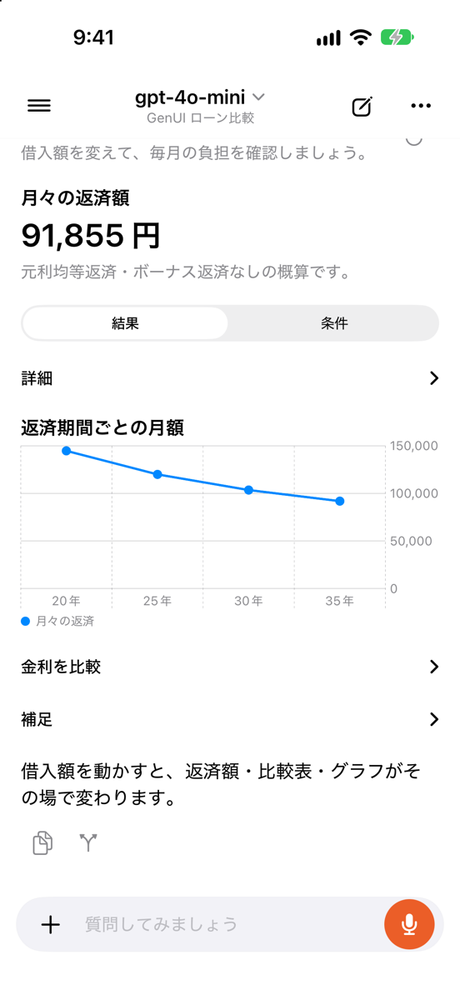

與單一模型對話
串流回答支援 Markdown、程式碼語法醒目提示、數學公式與圖片附件。可編輯、重新產生，並保留多個回答版本。
自備 AI · iPhone & iPad
YamabikoChat 是適用於 iPhone 與 iPad 的免費 AI 聊天 App。透過 API 金鑰或支援的帳號連接你原本就在使用的 AI 服務，然後與單一模型對話、並排比較兩個模型，或讓兩個模型互相對話。
免費下載。AI 使用費用直接支付給對應的 AI 供應商。



一目了然
模式
讓模式配合問題，而不是反過來讓問題配合模式。
串流回答支援 Markdown、程式碼語法醒目提示、數學公式與圖片附件。可編輯、重新產生，並保留多個回答版本。
把同一個提示詞送給兩個模型，並排查看兩個回答。比較模式的運作方式
選擇兩個模型、一個主題和對話輪數，然後看它們彼此討論。
讓模型把請求的一部分交給子代理處理——每個子代理可以使用不同的模型——並在對話中查看進度。
功能
寫作、摘要、翻譯、程式碼與數學——具備真正助手所需的工具。

適合誰
指南
下載適用於 iPhone 與 iPad 的 YamabikoChat。